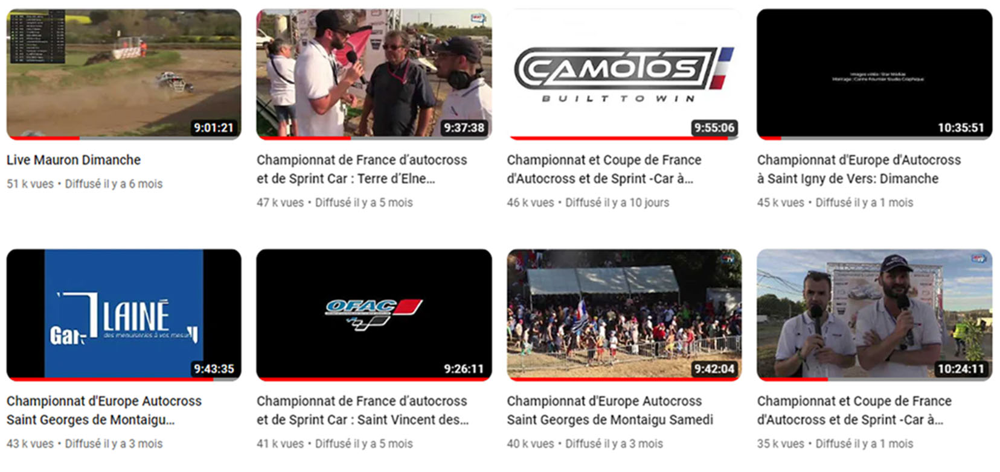

Comment suivre ?
De mars à octobre, le championnat de France de Sprint Car compte 10 épreuves réparties à travers tout le pays (voir page suivante).
D’années en années, la visibilité du championnat s’accroit et attire de plus en plus de public. Désormais, les épreuves sont diffusées en direct sur Youtube avec une qualité professionnelle (4 caméras, affichage des classements en temps réel, replays des plus belles actions,..) Chaque live de la saison a été vu en direct ou en replay par entre 20 000 et 51 000 spectateurs !
Notre page Facebook (MC-COMPETITION) est suivie par plus de 2000 personnes, celle de l’OFAC (le promoteur du championnat) compte 10 000 fans et certains groupes Facebook relayant l’actualité de l’Autocross et du Sprint Car dépassent la barre des 15 000 membres !
N'hésitez pas à cliquer sur les différents liens ci-dessus pour découvrir ces pages plus en détails !
.